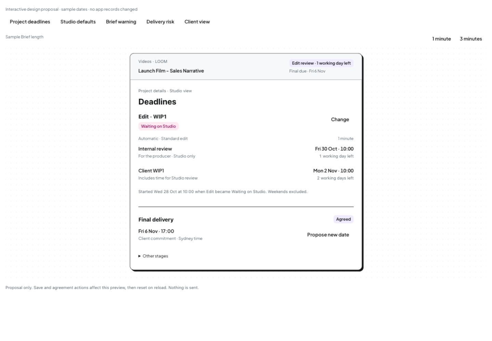
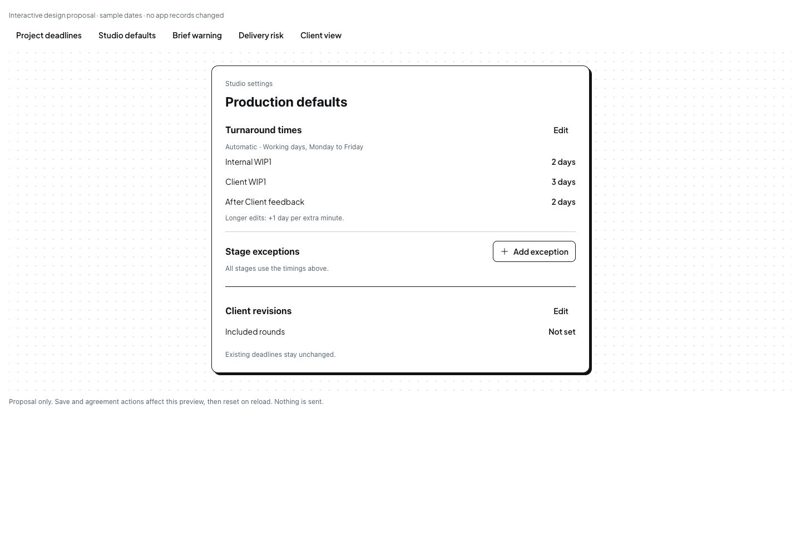
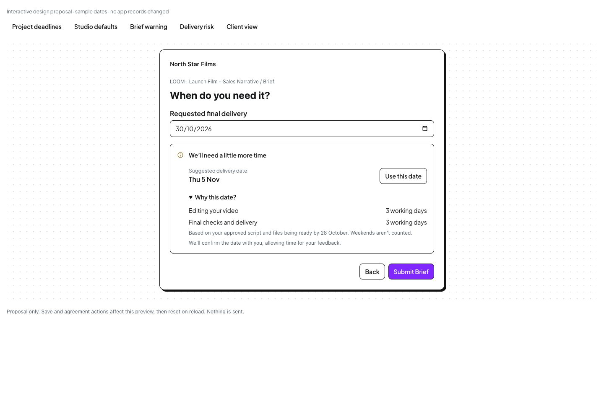
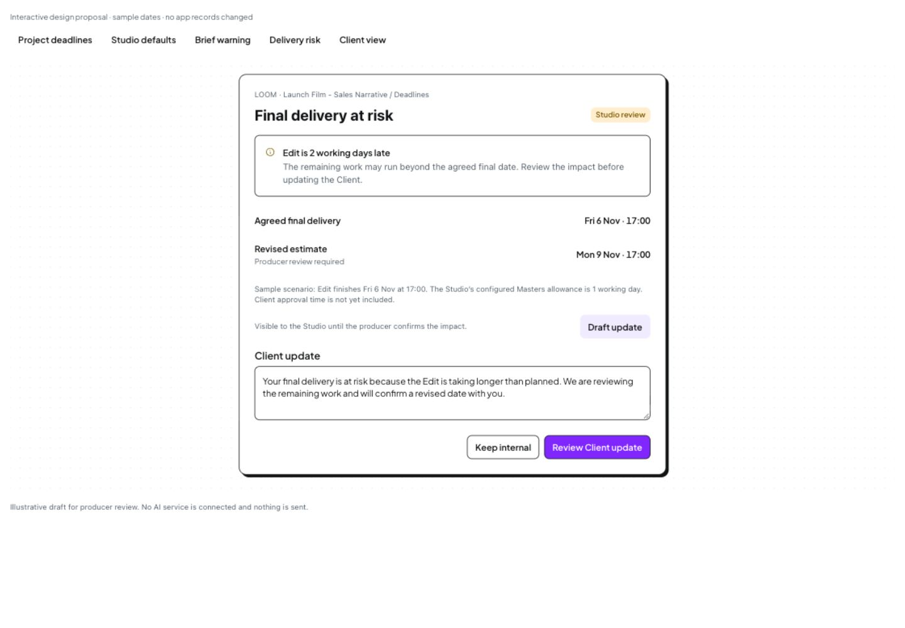
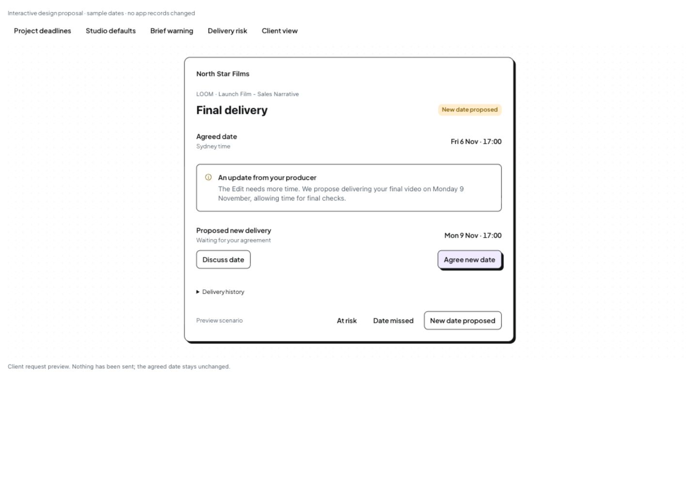
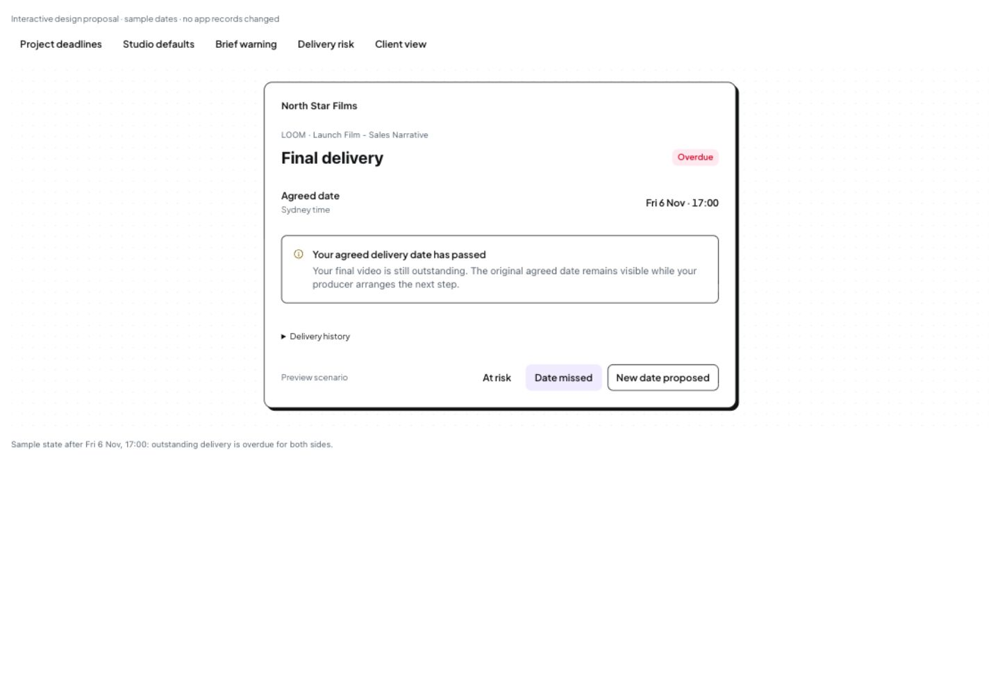

Design review · application unchanged
Turnaround times and delivery warnings
Configure Studio defaults once. Create stage deadlines when work returns to the Studio. Keep the Client’s final commitment clear, and review timing conflicts before they become surprises.
Open interactive design
28 October 2026 · Desktop proposal using current Brisk DS controls · Sample dates and independent review scenarios · Nothing saved to the app or sent
What to review
| View | Proposed experience |
|---|
| Project deadlines | A named Edit · WIP1 cycle with separate internal review and Client delivery targets, plus final delivery. Change offers Automatic or Specific date. Video length comes from the Brief. The sample one- and three-minute controls are outside the product UI. |
| Studio defaults | Show shared timing values once, then only genuine stage exceptions. Edit each rule in an existing DS EditingDialog with one Save action. Days remain explicit; revision rounds are separate and unset. Opening or cancelling an editor creates no exception. This proposes a new save flow for review, not an application change. |
| Brief warning | We’ll need a little more time leads with Suggested delivery date and Use this date. Why this date? explains Editing your video and Final checks and delivery in plain Client language. Selecting the date still creates a request, not a delivery commitment. |
| Delivery risk | The Studio sees the affected stage, cause, agreed date and revised estimate. The producer reviews a Client update. AI assistance is represented by an illustrative draft, without a connected service. |
| Client view | Review distinct at-risk, missed-date and proposed-date states. A proposed date remains separate from the agreed date. Simulated agreement retains the original date in history. |
Design choices
Keep the daily action small
Enter the shared Studio rule once. Linked stages update together; custom stages keep their own rule. Each override starts populated, and Use Studio default restores inheritance. Projects inherit this setup without another turnaround questionnaire.
Make the next responsibility visible
The Studio Videos example prioritises the pending internal review target. Client views use the released delivery promise and exclude internal targets. Final delivery stays separate.
Protect commitments
Changing effort hours, assignment or video length does not silently move a specific date. A new final date is proposed with a reason and needs Client agreement.
Keep warnings useful
Known date conflicts come from schedule calculations. Forecast risk first goes to the producer; factual overdue status is visible to both sides. AI can explain and draft, without independently sending updates or moving dates.
Proposed desktop views

Proposed Studio view · 1440px capture · sample dates. Open to enlarge.

Read-only Production defaults · 1440px. Shared times are shown once; only saved exceptions appear. Revision rounds remain separate. Existing default team is outside this contained review.

Revised Client Brief: short warning, suggested date and Use date. Reason and assumptions sit under Why?.

Proposed Studio risk review · illustrative draft, no AI service or message send.

Proposed Client request · original and proposed dates remain distinct.

Proposed factual overdue state · outstanding delivery after the agreed date.
All images above are genuine captures of the proposal, not current application UI or verified fixes. 1133px specific-date editor · 1133px settings
Simpler settings with one save boundary
The expanded form was combining defaults, inherited rows and an inline exception editor. The revised page shows the shared timings once and lists only saved exceptions. An existing DS EditingDialog handles each change with one Save or Cancel; there is no nested Done or second page Save.
This adds one click for occasional setup. Keeping shared fields inline would be slightly faster initially, but would retain mixed page/dialog save boundaries. The focused-editor approach is recommended for clarity.
Shared timings editor · Add exception editor · Only the configured exception shown · 1133px summary · Decision record · Latest verification
Concise Brief warning
The warning now says We’ll need a little more time and offers Use this date. Why this date? uses Editing your video and Final checks and delivery rather than unexplained stage jargon. The date remains a suggestion to confirm together, with feedback time still considered.
Expanded explanation · 1133px view · Verification and scenario assumptions
Latest placement recommendation
After inspecting current Chat, recommend a short inline Brief hint, an automated project Chat update after submission, and a persistent Deadline-column link to that message. Internal production risk stays private until a producer-reviewed Client update is appropriate. Reading Chat does not resolve the risk.
Current Chat evidence and placement recommendation. This placement has not been implemented or approved on Tom’s behalf; earlier contained warning screens remain proposal history.
Before application implementation
The overall direction follows Tom’s confirmed working-day rules, Waiting on Studio trigger and producer override requirement. This preview makes the additional UI and communication choices reviewable.
- Agree whether the compact Studio countdown should show the next internal review target, as illustrated, before the Client WIP target.
- Review the concrete Client risk and revised-date agreement screens. They follow the warning direction Tom asked us to proceed with; no actual sends are authorised.
- The displayed internal and Client targets use the same Waiting on Studio start. This follows Tom’s latest trigger; it does not introduce a second clock on reassignment.
- Resolve fractional-minute rounding and any internal revision target. The preview uses whole-minute examples and does not invent a 1-day internal revision target.
- Define defaults for other stages, animation/template exceptions, handling of existing stages without a start timestamp, and the demo-time reference. No dates or rule values are silently backfilled.
- Agree the included revision allowance and its scope before implementation. No number of rounds, limit enforcement or extra-round charging policy is assumed.
- Approve the focused-dialog save flow and merge it safely with the current Default project team editing behaviour. Preserve pending team drafts and current records.
Shoot remains a single stage with scheduled dates and substages. Media stays pinned outside the reorderable flow; any existing Media date must be preserved. Existing completed/hidden stage data remains available. This preview does not change project flow, access roles or permissions.
Implementation order after agreement
- Studio settings and the small front-end rule model; preserve existing team defaults and commitments.
- Per-stage cycles, automatic/fixed dates, explicit save/cancel, next-target countdown and role-appropriate display.
- Brief feasibility and ongoing risk/overdue states; proposed-date and Client-agreement reference flow using mock data only.
Verify each batch at 1440px and around 1133px, using current optional Storyboard/Animation flows and all applicable roles. Check working-day calculations, repeated status transitions, reassignment, Client-waiting cycles, fixed overrides, legacy dates, nested picker focus, cancellation and data preservation. Use the approved type-check and runtime/browser checks. No production build, dependency install or tests.
Evidence and limits
Current baseline and approved controls
Current Production settings capture confirms that the current page only configures the default project team. The inspected deadline code still has a single stage date plus final date. Existing mock AI and notification templates are not a scheduling engine.
The proposal imports the current DS Button, Input, Radio, Textarea and EditingDialog implementations. It embeds current Brisk tokens and font assets. The shared-default revision replaces the earlier stage tabs with one default and a list of linked stages. It adds no application component or new dependency. There is no exact approved reference screen for this new timing composition.
Desktop baseline · DS guidance · Requirements and current-code evidence · Timing decisions · Review register
Inspection limits and preservation
This is a contained interactive proposal, not a connected scheduler or application implementation. Views include independent sample scenarios. No notification, email, invitation, final delivery or Client acceptance was recorded in Brisk. The live app was only viewed to verify current settings. The user’s open project tabs were not operated.
Desktop captures check contained layouts rather than certify the complete future application shell. No mobile design pass or formal accessibility-compliance claim is made. Multi-active-stage compact disclosure, all stage-specific presets, holidays, partial working days and full risk forecast assumptions require further design/implementation verification.
Validation and source preservation · Browser observations · Earlier manual date-list proposal and inspected Mobbin references